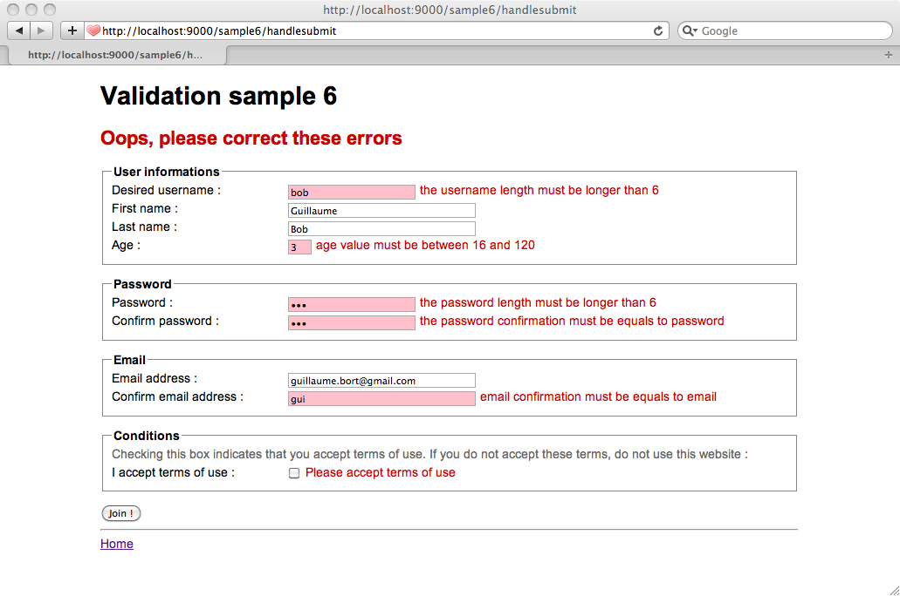
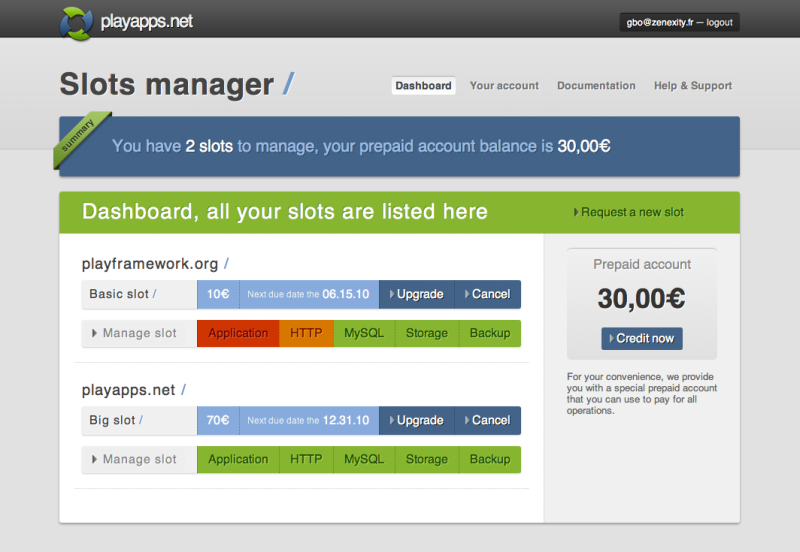

Play 1.0.3 — Release notes
Play 1.0.3 is a maintenance release of the Play 1.0 branch. There is no new major feature in this version, as the development focus is now set to the 1.1 version. The documentation has been updated with missing references, the yabe tutorial now includes a new chapter about Internationalisation and localisation, and a new sample application has been added.
Play 1.0.3 is a maintenance release and is fully compatible with the 1.0 series. If you encounter any problems please ask us on the Google Group.
You can read about the fixed bugs on the 1.0.3 road map page. The most important changes are highlighted on this page.
New sample application: validation
A new sample application has been added. It demonstrates the different ways to create a form with the Play validation support.

New yabe tutorial chapter
Internationalisation and localisation completes the existing yabe tutorial with application. Although we could have done this from the start, it is more realistic to build the first version of an application in a single language, and add multiple languages later.
playapps.net support
The 1.0.3 release is the first one to be officially supported by the new http://www.playapps.net on the cloud-hosting platform.

Next release: Play 1.1 release notes